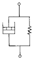
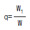
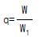
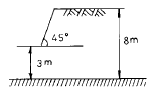
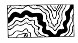
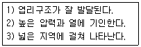

화약취급기능사 (2002-01-27 기출문제)
1과목: 화약 및 발파
1. 카알릿(Carlit)폭약에서 폭발시 생기는 염화수소 제거제로 어떤 것을 배합 하는가?
- 질산암모늄
- 질산에스테르
- 알루미늄가루
- 질산칼륨
(정답률: 알수없음)

2. 디메틸아닐린을 진한황산에 녹인다음 여기에 혼합산(질산과 황산)을 넣고 니트로화하면 생성되는 것은?
- 테트릴
- 헥소겐
- 펜트리트
- 피크르산
(정답률: 알수없음)
3. 다음 화약류 중 전폭약은 어느 것인가?
- 무연화약, 흑색화약
- 테트릴, RDX
- 다이너마이트, ANFO 폭약
- 풀민산수은(II), 아지화납
(정답률: 알수없음)
4. 다음 중 피크르산(Picric aicd)을 제조하는 방법이 아닌것은?
- 페놀에 황산과 질산을 작용시키는 법
- 클로로벤젠에서 합성하는 방법
- 수은을 촉매로 하고 벤젠에 직접 질산을 작용 시키는 방법
- 황산과 질산으로 3단계 나트로화 반응을 시키는 방법
(정답률: 알수없음)
5. 다음 그림과 같은 역학적 모양은?

- 맥스웰물체
- Bingham 물체
- St.Venant 물체
- Voigt 물체
(정답률: 84%)
6. 암석 약 1m3를 발파할때 필요로 하는 폭약량의 뜻을 가지는 것은?
- 발파계수
- 폭약계수
- 암석계수
- 전색계수
(정답률: 알수없음)
7. 발파진동의 상호간 관계식이 올바르지 못한 것은? [D:변위, V:입자속도, A:가속도, t:시간, f:진동주파수, ,W:각속도, T:주기]
- D=V/2π f
- V=A/2π f
- A=D/2π f
- W=2π f
(정답률: 알수없음)
8. 보통 화강암(암석항력계수 : 1.0), 젤라틴다이너마이트(폭약위력계수 : 1.0)를 사용하여 최소저항선 1.2m에서 시험발파를 하려고 한다. 필요한 표준장약량은 얼마나 되겠는가 ?(단, f(w)=0.841, 전색계수는 0.8이다.)
- 1.16㎏
- 2.15㎏
- 3.⑤㎏
- 4.15㎏
(정답률: 알수없음)
9. 암석의 천공발파 결과 장약량 100g으로 1.2m3의 채석량을 얻었다면 300g의 장약량으로는 몇m3의 채석량을 얻을 수 있는가?
- 2.4
- 3.6
- 4.8
- 5
(정답률: 알수없음)
10. 다음중 단일발파의 최소저항선을 W라 하고 집중발파시의 저항선을 W1이라 하면 저항선의 증대 비율은?


- q=W1W
- q=W1-W
(정답률: 80%)
11. 다음 사항은 조절발파방법을 선택할때 고려해야 할 내용이다. 가장 거리가 먼 것은?
- 지반의 강도
- 발파 구조물의 사용목적과 대상 암반의 물리적 성질
- 폭약의 사용량
- 구멍의 지름 및 배열간격
(정답률: 알수없음)
12. 다이나마이트를 장기간 저장하면 NG과 NC의 콜로이드화가 진행되어 내부의 기포가 없어져서 다이나마이트는 둔감하게 되고 결국에는 폭발이 어렵게 된다. 이와같은 현상을 무엇이라 하는가?
- 고화
- 노화
- 초화
- 니트로화
(정답률: 알수없음)
13. 다음중 폭발온도와 비에너지 값이 가장 큰 것은?
- 니트로글리콜
- 니트로글리세린
- 펜트리트
- T.N.T
(정답률: 알수없음)
14. 다음 사항은 질산암모늄 폭약에 관한 내용이다. 내용이 틀린 것은?
- 불폭 감도 25cm 이상이어야 한다.
- 폭발 속도 3000 - 4000m/s 이다.
- 순폭도 2 이상이다.
- 폭발 예감제로 염화나트륨을 사용한다.
(정답률: 알수없음)
15. 화약류의 선정방법이다. 다음중 맞는 것은?
- 고온의 막장에서는 내수성폭약을 사용한다.
- 굳은 암석에는 정적효과가 큰 폭약을 사용한다.
- 강도가 큰 암석에는 에너지가 작은 폭약을 사용한다.
- 장공발파에는 비중이 작은 폭약을 사용한다.
(정답률: 알수없음)
16. 다음 중 폭약의 선택에 있어서 틀린 것은?
- 탄광에서는 검정폭약을 사용한다.
- 갱내에서는 후가스가 적은것을 사용한다.
- 수공 또는 수중발파시에는 내수성폭약을 사용한다.
- 장공발파시에는 고비중 폭약을 사용한다.
(정답률: 알수없음)
17. 폭약 폭발시 암석의 파괴현상을 약실 중심으로 부터 순서대로 나열하면?
- 분쇄-소괴-대괴-균열-진동
- 분쇄-소괴-균열-진동-대괴
- 진동-균열-대괴-소괴-분쇄
- 균열-진동-소괴-대괴-분쇄
(정답률: 알수없음)
18. 다음은 RQD를 설명한 것이다. RQD와 관계가 없는 것은?
- 암석의 질을 나타내는 지수이다.
- 암석의 강도를 나타내는 지수이다.
- RQD의 값은 암석의 역학적 결함이 적고 강도가 클수록 크다.
- RQD의 값은 풍화작용을 덜 받을수록 커진다.
(정답률: 알수없음)
19. 다음중 병렬식 전기발파 결선방법의 장점이 아닌 것은?
- 대형발파에 이용된다.
- 전기뇌관의 저항이 조금씩 달라도 큰 문제가 없다.
- 전원에 동력선, 전등선을 이용할 수 있다.
- 결선이 틀리지 않고 불발시 조사하기 쉽다.
(정답률: 알수없음)
20. 조절발파 방법중 라인 드릴링(line drilling)법에 대한 내용중 맞는 것은?
- 파단선 바깥쪽의 암반에는 응력과 균열이 미치지 않도록 해준다.
- 천공 비용을 저렴하게 할 수 있으며, 이방성 암반에 좋은 성과를 얻을 수 있다.
- 절리나 층리가 있는 암반에 적용이 용이하다.
- 천공간격이 상호 달라도 별다른 문제점이 없다.
(정답률: 알수없음)
2과목: 화약류 안전관리 관계 법규
21. 1.8m각선이 달린 전기뇌관 30개를 병렬 결선하여 100m의 거리에서 제발시킬때 소요전압은? (단, 모선저항:0.02[Ω /m], 뇌관저항(개당):0.97[Ω ] 점화전류:1.5 [A], 발파기 내부저항:3.75[Ω ])
- 약 55 [V]
- 약 50 [V]
- 약 27 [V]
- 약 12 [V]
(정답률: 알수없음)
22. 사면의 활동형상을 직선상태로 보는 것은?
- 원호사면
- 직립면
- 유한사면
- 무한사면
(정답률: 알수없음)
23. 천공발파에 있어서 최소저항선을 1m, 장약장을 40cm로 하려고 한다. 이때 적당한 천공장은 얼마인가?
- 1.6 m
- 1.2 m
- 1 m
- 1.3 m
(정답률: 알수없음)
24. 암반분류시 Q 시스템에 의해 분류할때 다음과 같은 변수에 의해 결정된다. 관계가 거의 없는 것은?
- 봉압
- 암반내의 불연속면에 의해 블럭으로 형성된 암반 덩어리의 크기
- 절리의 전단강도
- 암석의 단축압축강도
(정답률: 알수없음)
25. 그림과 같은 단순 사면에서의 심도계수는?

- 2.7
- 1.6
- 0.6
- 0.9
(정답률: 알수없음)
26. 화약류를 수입한자가 질산에스텔의 성분이 들어있지 아니한 폭약을 수입 하였다면 어떤 안정도시험을 하여야 하는 가?
- 낙추시험
- 내열시험
- 옥도가리시험
- 가열시험
(정답률: 알수없음)
27. 수분 또는 알콜분이 20퍼센트정도 머금은 상태로 운반해야 하는 것은? (단, 이 들을 주로하는 기폭약임)
- 테트라센
- 펜타에리스릿트
- 뇌홍
- 니트로셀룰로오스
(정답률: 알수없음)
28. 사용하다가 남은 화약류 처리로서 가장 바른 표현은?
- 화약류취급소에 보관한후 다음날 발파시 사용한다.
- 땅속에 묻어 버린다.
- 폐기처리 한다.
- 화약류저장소에 반납한다.
(정답률: 알수없음)
29. 화약류 저장소가 보안거리 미달로 보안물건을 침범했을 경우 처분기준은?
- 허가취소
- 감량명령
- 6개월간 정지 명령후 조치 불이행시 취소
- 1년간 허가 취소후 재조치
(정답률: 알수없음)
30. 화약류 저장소외의 장소에 저장할 수 있는 화약류의 수량이 맞는 것은?(단, 화약류저장소가 있는 자로서 6개월이내에 종료하는 사업의 경우)(오류 신고가 접수된 문제입니다. 반드시 정답과 해설을 확인하시기 바랍니다.)
- 전기도화선 2500m
- 도폭선 100m
- 총용뇌관 100개
- 폭약 5㎏
(정답률: 알수없음)
31. 화약류 제조업자가 안정도 시험을 한후 그시험 결과를 누구에게 보고하여야 하는가?
- 행정자치부장관
- 지방경찰청장
- 경찰청장
- 경찰서장
(정답률: 알수없음)
32. 화약류 저장소에서 일어나는 일들 중 잘못된 것은?
- 저장소 안에서 휴대용 건전지를 사용하였다.
- 저장소 안에서 수불상황을 확인하기 위하여 상자속의 뇌관 숫자를 파악하였다.
- 저장소 내부에 무연화약 또는 다이너마이트를 저장하였을 때 온도계를 장치하였다.
- 저장소의 경계 울타리 안에는 필요없는 사람의 출입을 하지 못하도록 막았다.
(정답률: 알수없음)
33. 화약류저장소에 흙둑을 쌓는 경우의 기준으로 틀린것은?
- 흙둑은 저장소 바깥쪽 벽으로부터 흙둑의 안쪽벽 밑까지 1m 이상 2m이내의 거리를 두고 쌓을 것
- 흙둑의 경사는 45° 이하로 하고 정상의 폭이 1m 이상으로 할 것
- 흙둑의 높이는 저장소의 지붕높이 이하로 할 것
- 흙둑의 표면에는 가능한한 잔디를 입힐 것
(정답률: 알수없음)
34. 위험공실의 시설기준에 관한 사항중 거리가 먼 것은?
- 내화성 건물로 하여 별체로 할 것
- 규정에 의한 피뢰장치를 할 것
- 폭발위험이 있는 공실은 규정에 의한 흙둑을 설치할 것
- 공실안에는 온도 및 습도의 조정장치를 설치할 것
(정답률: 알수없음)
35. 화약류 양수허가의 유효기간은?
- 2년을 초과할 수 없다.
- 1년을 초과할 수 없다.
- 6개월을 초과할 수 없다.
- 3개월을 초과할 수 없다.
(정답률: 알수없음)
36. 화성암을 구성하는 주성분 광물중 유색광물로 짝지어진것은?
- 석영 - 장석
- 감람석 - 감섬석
- 사장석 - 백운모
- 석영 - 백운모
(정답률: 알수없음)
37. 퇴적암에서 규조토는 어떤 퇴적물인가?
- 쇄설성 퇴적물
- 화학적 퇴적물
- 유기적 퇴적물
- 구조적 퇴적물
(정답률: 알수없음)
38. 화성암속에 주변 암석이 박혀있을 때 무슨 암석이라고 하는가?
- 응회암
- 포획암
- 흑요암
- 중성암
(정답률: 알수없음)
39. 다음에서 접촉변성암에 해당하는 것은?
- 편암
- 혼펠스
- 셰일
- 천매암
(정답률: 알수없음)
40. 화산암에서 흔히 볼 수 있는 구조로 기공을 갖고 있는 구조는 무엇인가?
- 유동구조
- 다공상구조
- 호상구조
- 구상구조
(정답률: 알수없음)
3과목: 암석 및 지질
41. 지질구조를 지배하는 주요한 구조적 요소와 관련이 적은 것은?
- 부정합
- 조흔
- 단층
- 선구조
(정답률: 알수없음)
42. 화성암의 반상조직에 있어서 반점모양의 큰 알갱이를 (a), 바탕을(b)라 한다. a와 b로 옳은 것은? (순서대로a, b)
- 절리, 엽리
- 반정, 석기
- 석기, 절리
- 행인상, 편리
(정답률: 알수없음)
43. 다음의 화성암중 염기성암으로만 이루어진 것은?
- 현무암, 휘록암, 반려암
- 안산암, 안산반암, 섬록암
- 유문암, 석영반암, 화강암
- 석영반암, 섬록암, 반려암
(정답률: 알수없음)
44. 화성암의 결정입자가 큰 원인은 무엇인가?
- 냉각 속도가 빠를때
- 냉각 속도가 느릴때
- MgO 성분이 많을때
- SiO2 성분이 많을때
(정답률: 알수없음)
45. 퇴적암인 쳐어트(chert)에 가장 함량이 많은 성분은?
- CaSO4
- CaCO3
- NaCl
- SiO2
(정답률: 알수없음)
46. 다음중 퇴적암에서 볼수 있는 특징과 가장 거리가 먼 것은?
- 결핵체
- 쪼개짐
- 건열
- 물결자국
(정답률: 알수없음)
47. 지름이 1/16 ㎜ 이하인 작은 알갱이로 된 퇴적암이고 주성분은 작은 석영 알갱이와 점토(고령토)로 이루어진 암석명은?
- 셰일
- 사암
- 역암
- 각력암
(정답률: 82%)
48. 화학적 퇴적암과 그의 화학성분이 옳게 연결된 것은?
- 암염 - SiO2
- 석고 - CaSO42H2O
- 석회암 - CaSO4
- 돌로마이트 - CaCO3
(정답률: 알수없음)
49. 다음중 대표적인 스카른 광물에 해당하지 않는 것은?
- 석류석
- 녹렴석
- 양기석
- 인회석
(정답률: 알수없음)
50. 변성암에서 유색광물과 무색광물이 서로 교대로 나타나는 줄 무늬를 무엇이라 하는가?
- 엽리
- 편리
- 편마구조
- 층리
(정답률: 알수없음)
51. 대규모의 습곡에 작은 습곡을 동반하는 습곡의 이름은 무엇인가?

- 평행습곡
- 복배사, 복향사
- 횡와 습곡
- 드래그습곡
(정답률: 알수없음)
52. 다음중 중생대에 속하지 않는 것은?
- 백악기
- 쥐라기
- 트라이아스기
- 석탄기
(정답률: 알수없음)
53. 육지표면에 분포되어 있는 암석의 75%를 차지하는 것은?
- 퇴적암
- 화성암
- 변성암
- 화강암
(정답률: 알수없음)
54. 사장석과 각섬석이 주성분 광물이며 간혹 흑운모와 휘석을 포함하고 석영과 정장석을 드물게 포함하는 심성암은?
- 유문암
- 현무암
- 안산암
- 섬록암
(정답률: 알수없음)
55. 화성암의 육안적 분류에서 SiO2가 50∼45% 정도이면 어느 암에 속 하는가?
- 산성암
- 염기성암
- 초염기성암
- 중성암
(정답률: 알수없음)
56. 아래와 같은 특징은 어떤 변성작용의 결과인가?

- 접촉변성작용
- 열변성작용
- 후퇴변성작용
- 광역변성작용
(정답률: 알수없음)
57. 다음에서 고생대에 해당 되는 층 혹은 층군은 어느것인가?
- 금천층
- 서귀포층
- 옥천층군
- 신라층군
(정답률: 알수없음)
58. 한반도에 일어난 지각운동중 불국사 운동은 언제 일어났는가?
- 석탄기
- 트라이아스기말기
- 쥐라기말기
- 백악기말기
(정답률: 알수없음)
59. 현정질 비현정질 조직에 있어서 상대적으로 유난히 큰 광물알갱이들이 반점 모양으로 들어 있는 경우 이러한 조직은?
- 반상조직
- 구상조직
- 미정질조직
- 유리질조직
(정답률: 알수없음)
60. 다음중 공극률(%)이 가장큰 것은?
- 사암
- 셰일
- 점토
- 자갈
(정답률: 알수없음)